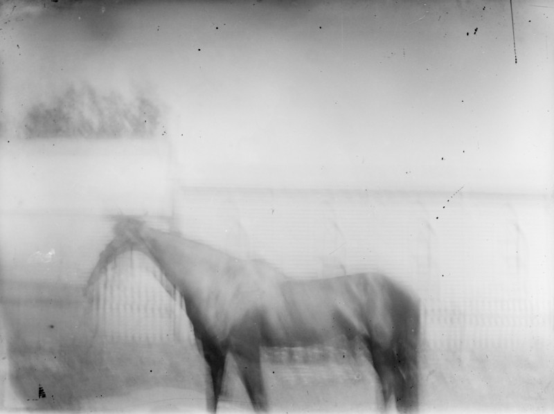
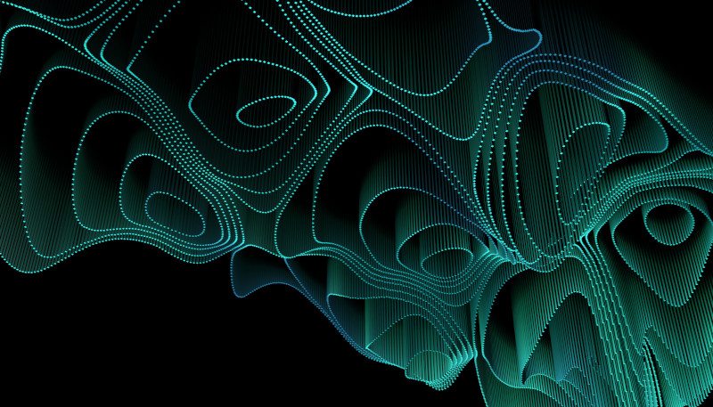
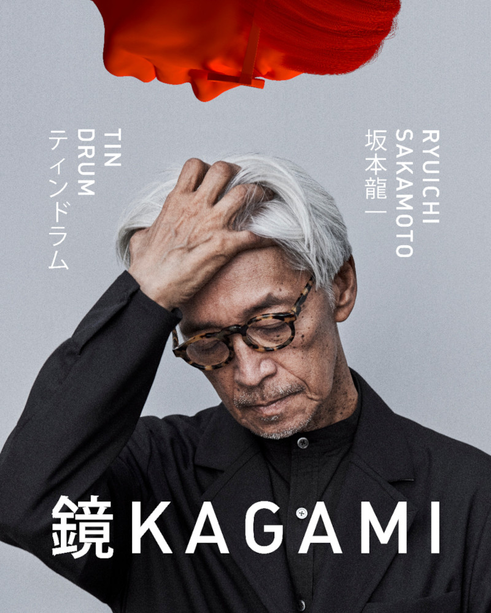
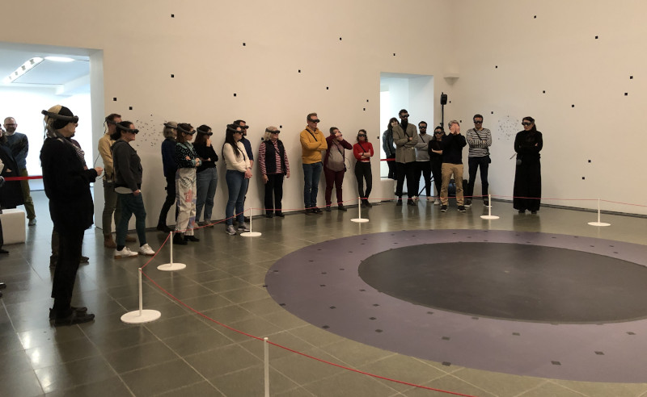
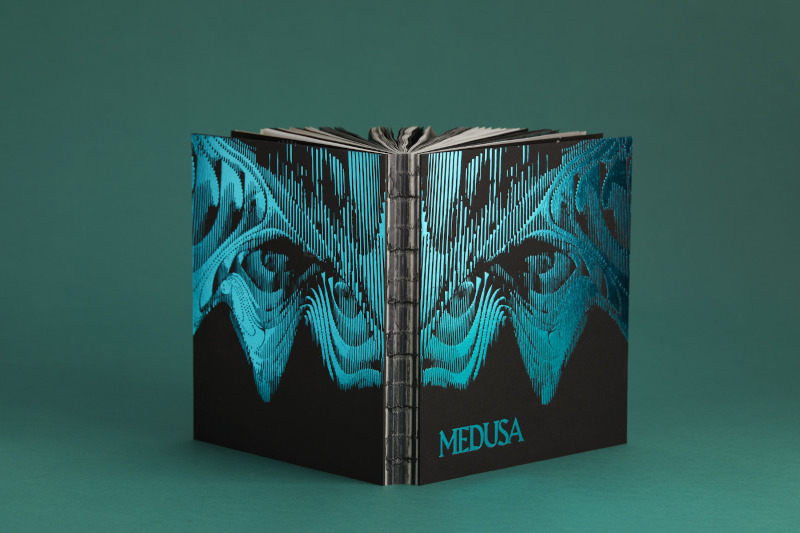

Bio
Yoyo Munk is a scientist and artist based in Pittsburgh. A biologist by training, their background spans from insect flight aerodynamics and navigation behavior to the psychophysics of human visual responses to augmented reality displays. In their artistic practice, they explore the affordances of headset-based mixed reality as a medium, creating gallery-scale generative works designed to be explored by large audiences. They hold a PhD in Integrative Biology from UC Berkeley.
Works for Mixed Reality
In Memory | Of Being (2025)
Bespoke mixed reality work created for State Library Victoria over the course of a two month residency as the inaugural Creative Technologist in Residence at the SLV LAB. Designed for an audience of up to forty participants, spanning six distinct gallery spaces across the Level 5 gallery of the La Trobe reading room.
Medusa (2021)
An experimental work of feedback-driven virtual architecture, exploring the nature of architecture devoid of physical form. Debuted as the headliner of the 2021 London Design Festival, and exhibited for an extended period at Pioneer Works in 2023.
Kagami (2023)
Technical direction on Kagami, including design and management of software architecture. Novel contributions including custom methods for automated processing of volumetric capture data and integration with traditional CG elements.
The Life (2019)
Technical direction on The Life through various iterations in hardware, including the debut on Magic Leap One in 2019, porting to the Hololens 2 platform in preparation for the sale of the work by Christie's in 2020, and then porting once again to the Magic Leap 2 in 2024.
Books
Medusa (2023)
Published in 2023 by Hurtwood Press and distributed internationally through Thames and Hudson.